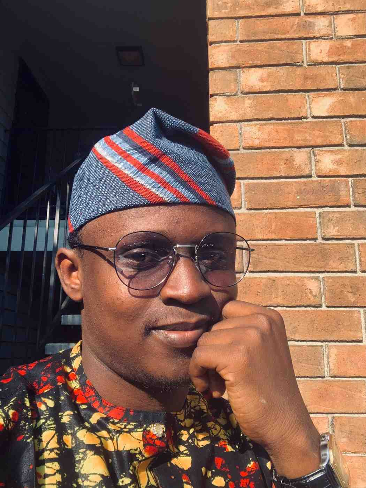

Childhood Historian & Digital Archivist
Who I am & where I come from
Research is my calling. I am deeply passionate about Childhood History and digital humanities, dedicated to making a meaningful impact in this field.
I always look for ways to combine my love for technology with my passion for research — preserving and making accessible underrepresented historical narratives, particularly focusing on children's experiences and family histories.
My work bridges archival science, AI, and public history, bringing hidden stories to light through digital tools and interdisciplinary methods.
Research & Digital Initiatives
Revolutionary framework integrating blockchain technology and artificial intelligence for digital archiving and preservation. Combines blockchain verification with AI-powered metadata extraction — presented at the Society of American Archivists (2024) and IPRES International Conference (2025).
Technologies: Python, Flask, MongoDB, Blockchain, AI/ML
Interactive chatbot exploring Little Rock's educational heritage through Central and Dunbar High Schools. Provides historical narratives and visual content with archival resources.
Demo application testing the feasibility of using Artificial Intelligence in archival and library fields. Explores AI automation for archival processes.
Comprehensive character collection web exhibit using CAHC materials, showcasing research and digital storytelling skills in public history.
Investigating the role of Nigerian newspapers in missing children cases (1960–2000). Uncovering historical patterns and media representation of childhood vulnerabilities.
Focus: Children's History, Media Analysis on hidden stories
Multimedia AI chatbot integrating audio, text, and video to engage users with folk singer Phil Ochs' legacy.
Status: In Development
Scholarly Output & Public Writing
Professional & Research Roles
Implementing AI-powered metadata enhancement solutions and managing cross-platform database integration for one of the world's premier music archives.
Selected as one of twelve graduate fellows nationwide to contribute to a digital public history project on the 1977 National Women's Conference.
Processed presidential records for FOIA requests, managed electronic records, created metadata, and assisted with digitization projects. Specialized in textual processing, research room operations, and audiovisual archives.
Developed web exhibits, processed archival collections including Pfeifer Family Papers and Winthrop Rockefeller Institute Collection, assisted patrons with research, and participated in Digital Archiving Working Group (DAWG) meetings.
Conducted mixed-methods research, designed surveys, and analyzed agricultural value chain data. Led data collation for School Agricultural Program, boosting team fieldwork output by 85%.
Gained foundational experience in archival practices and records management in a governmental archival institution.
Tools, Systems & Expertise
Get in touch
Little Rock, AR